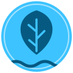

Матеріали п’яти робочих груп у єдиному форматі: читайте онлайн, друкуйте або завантажуйте оригінали (PDF, DOCX, XLSX).

Методика навчання вітрильництва
Концепція, сценарії занять, адаптація до водойм, картки шести країн.

Методика навчання віндсерфінгу
П’ять занять, план Б, критерії готовності й рефлексія.

Безпека та управління ризиками
Пакет безпеки, форми 00–11, положення, таблиця ризиків і матриця відповідальності.

Інклюзія та рефлексія
Посібник з інклюзії, адаптації, організації за країнами та дві книжечки рефлексії.

Екологічна відповідальність
«Не залишай сліду», практики Зеландії та порівняння місць таборування.